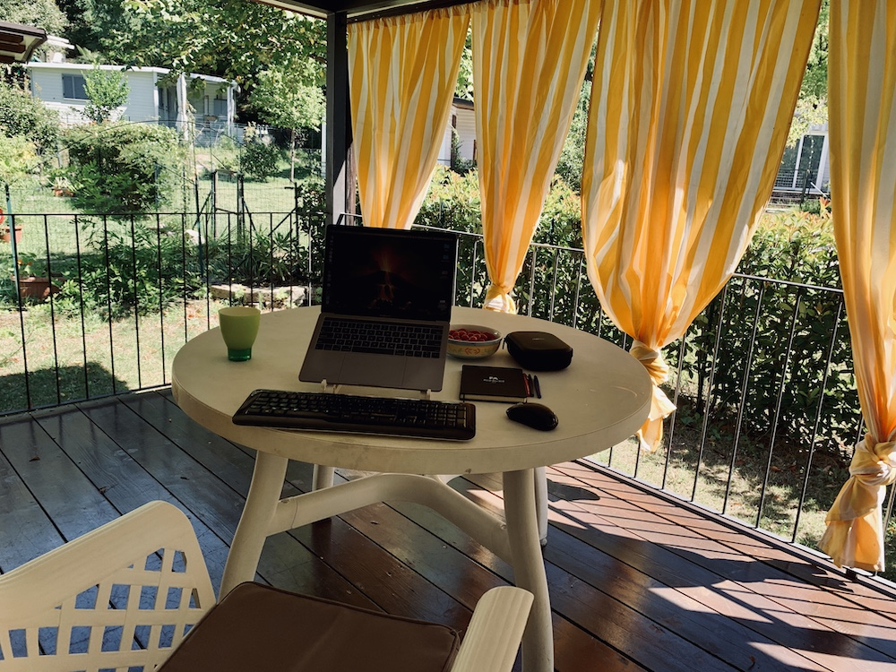
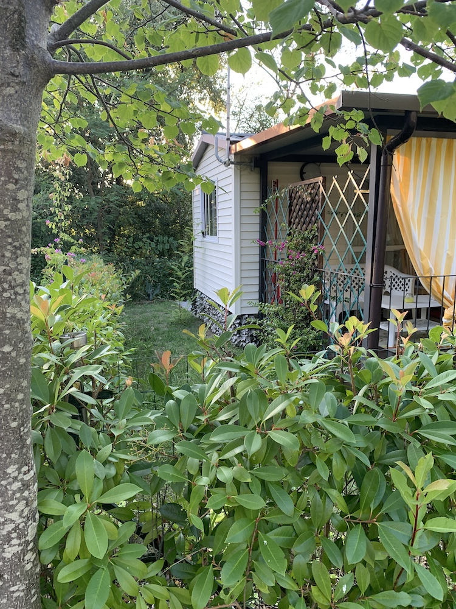
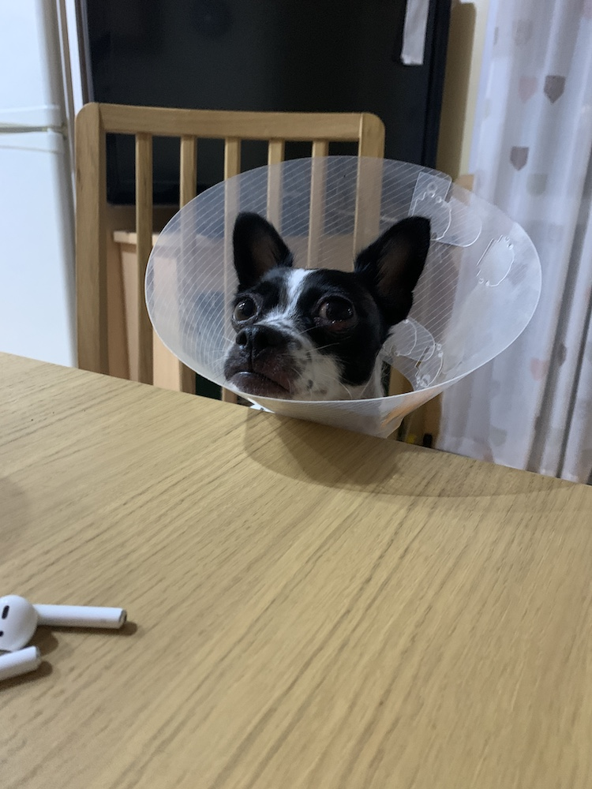
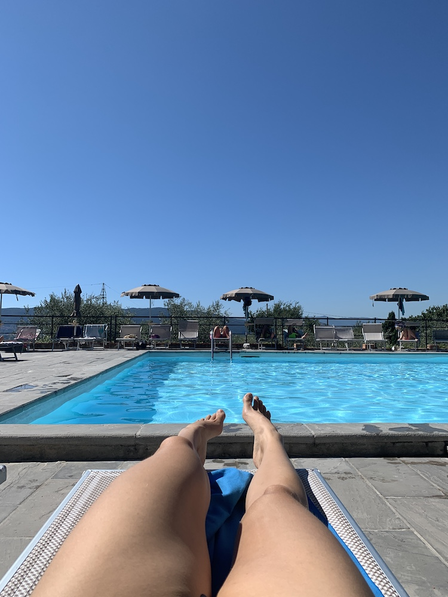
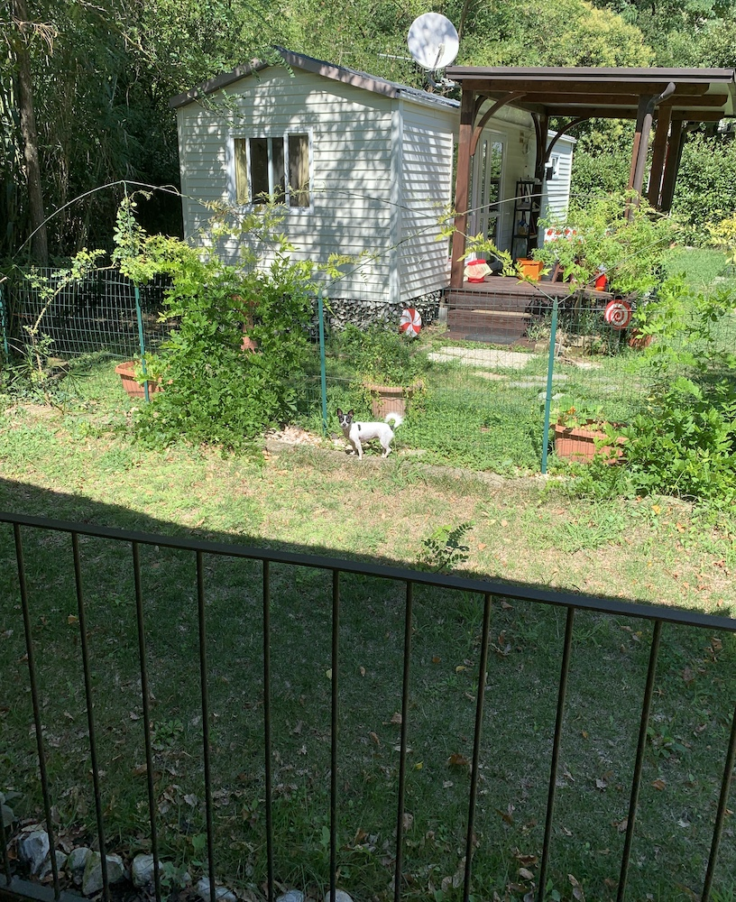
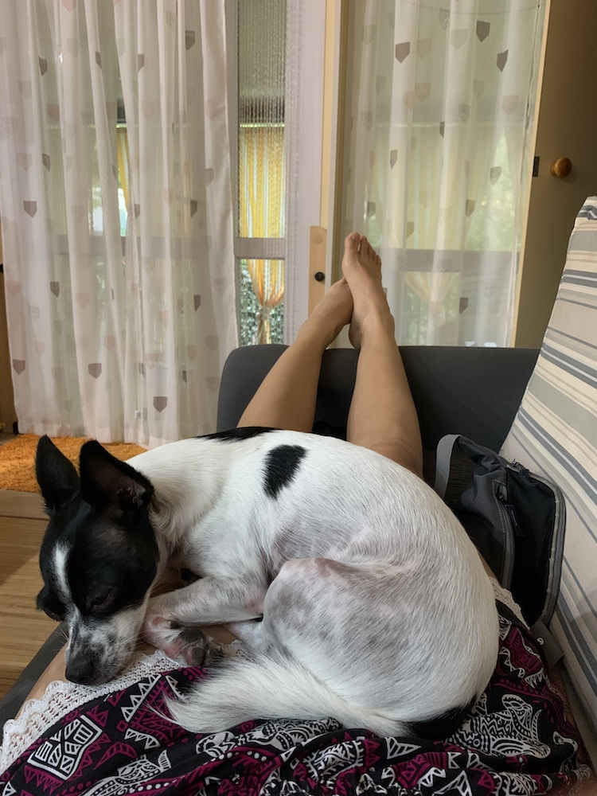

Miscellanea
Come ho scritto un romanzo in otto giorni
7 ottobre 2020

Scrivere un libro - un romanzo completo - in otto giorni è possibile?
Il titolo sembra il classico clickbait, soprattutto per lo scrittore professionista che conosce il processo da idea a scaffale nella sua completa vastità.
E allora mi permetto un chiarimento: ecco come ho scritto la prima bozza completa di un romanzo di fantascienza in otto giorni.
È escluso il tempo di progettazione e scalettatura. È estremamente escluso il tempo di editing. Ma è comunque un risultato impressionante, e io non potevo sperare che andasse meglio.
#1week1book è la mia challenge personale, la sfida in cui ho voluto raggiungere il mio limite come scrittrice, superarlo, e scoprire che posso addirittura dare un pizzico in più.
In questo articolo, scritto prima della partenza, parlo di come mi sono organizzata, da cosa è scaturita questa follia, e i miei progetti per questa assurda settimana.
Xeroton:
Xeroton è un romanzo di fantascienza per adulti, ibrido, con elementi soft e hard sci-fi.
L’idea di Xeroton è nata circa un anno fa e da allora, nel poco tempo libero ho scalettato l’intero romanzo.
 Giorno 1 - Venerdì
Giorno 1 - Venerdì
| Date | Day | Wordcount | Writing Time | Words per Hour |
| 04/09/2020 | Friday | 7.696 | 7:59 | 964 |

Parto alle 7 in punto e arrivo verso le 9:30 al campeggio dove trascorrerò i prossimi 8 giorni di follia. Il tempo di scaricare le valigie e preparare tutto, incomincio a scrivere che è già tardi.
La sensazione di sconfitta inizia a farsi sentire verso le 1.000 parole: sto scrivendo un libro di merda. Come posso pensare di portare avanti un’idea così patetica? La protagonista è piatta e quando non lo è, è insopportabile pure per me.
No, io me ne torno a casa…
Ma il mio senso del dovere mi tira un calcio nelle chiappe intorpidite dal lungo tempo seduta, mi piazzo le AirPods nelle orecchie e ritorno a scrivere.
Giorno 2 - Sabato
| Date | Day | Wordcount | Writing Time | Words per Hour |
| 05/09/2020 | Saturday | 11.642 | 10:29 | 1.111 |
7.700 - 20.000
[caption id="attachment_1317" align="alignright" width="300"] Newt terrorizzata dai fuochi d'artificio.[/caption]
La tastiera inizia a fare cilecca. E va bene, tunnel carpale sia, scrivo direttamente sulla tastiera del Mac. Ci si può abituare a tutto nella vita, anche ai nugoli di zanzare che mi ronzano attorno.
Ma non al matrimonio che si svolge a cento metri di distanza, nella piscina del campeggio. E che va avanti fino alle due di notte.
Poco male: Two Steps from Hell nelle orecchie e si recuperano le tremila parole di ritardo di ieri!
Giorno 3 - Domenica
| Date | Day | Wordcount | Writing Time | Words per Hour |
| 06/09/2020 | Sunday | 9.879 | 9:12 | 1.074 |
20.000 - 30.000

Newt è gravemente allergica all’erba e le sue zampine si stanno decomponendo, così devo dire addio ai miei buoni propositi di fare passeggiate in montagna (questo avrà ripercussioni sul mio umore tra qualche giorno).Yoga sulla veranda baciata dal sole, quanta poesia!
Il pattern della mia scrittura (che già conoscevo, ma escludendo cause di natura esterna ora posso analizzarlo in modo più oculato) è sempre questo: scrivo meglio la sera, meglio ancora la notte.
La mia media sono 1000 parole all’ora.
Riesco ad aumentare fino a 1300 se sono in una fase di intensa concentrazione, ma con questo retreat posso dire di essere arrivata al mio limite: 1000 all’ora è il tuo numero, Tita, deal with it.
Lo trovo molto utile per stabilire i miei futuri obiettivi.
Giorno 4 - Lunedì
| Date | Day | Wordcount | Writing Time | Words per Hour |
| 07/09/2020 | Monday | 10.683 | 10:10 | 1.051 |
30.000 - 40.000

Si sente che è un lunedì. La giornata inizia malissimo.Sono arrivata alla scena d’azione pre-midpoint, scena che non avevo scalettato nei minimi dettagli. E… vogliamo chiamarlo blocco dello scrittore perché non sappiamo come altro definirlo? No, lo dico io che cos’è. È il “blocco dell’Esploramondi”.
È il blocco di chi ha scritto “scena d’azione qui” nella scaletta, invece che scrivere “X fa Y e ammazza Z con un tecnoarco di cristallografite microfenica, generata dall’oscillazione dei particolonembi atomici.” (Con annesso copincolla di Wikipedia che spiega nel dettaglio la struttura chimico-fisica dei particolonembi).
Ma, con un certo ritardo, mi riprendo e raggiungo le 40.000 e supero il Midpoint!
Tiè, così impari a lasciare un capitolo non scalettato.
Ah, e ho anche imbrogliato con le droghe.
Solo per la scienza, eh.
Pare che l’iperico aiuti la produzione della serotonina (o ne riduca la captazione, adesso non ricordo). Non so se funziona davvero, ma per non saper né leggere né scrivere ne ho prese due pastiglie (attenzione, quasi un’overdose contro la singola consigliata al giorno).
Ah, e anche un ibuprofene. Perché le ernie cervicali mi bussavano nel cervello.
Giorno 5 - Martedì
| Date | Day | Wordcount | Writing Time | Words per Hour |
| 08/09/2020 | Tuesday | 9.838 | 9:35 | 1.027 |
40.000 - 50.000

Scrivere è una droga, altro che iperico.
Sono in botta. Sono lì, sono in quell'astronave, sono tra pareti di acciaio, fluttuando in microgravità.
Io sono i personaggi: sento quello che sentono, vivo quello che vivono. Odio e amo e ho paura e mi esalto.
Anche oggi devo scrivere una parte difficile: tra midpoint e second plot point passano tre capitoli di transizione e richiedono un continuo crescendo che, senza azione, sembra difficile da ottenere.
Invece il risultato mi soddisfa, le mie dita volano sulla tastiera e la giornata si conclude in bellezza.
Giorno 6 - Mercoledì
| Date | Day | Wordcount | Writing Time | Words per Hour |
| 09/09/2020 | Wednesday | 10.992 | 11:08 | 987 |
50.000 - 60.000

Oggi è un giorno difficile.Un calo di serotonina (e chi un bel giorno leggerà questo libro capirà l’ironia della cosa), e un groppo che mi stringe lo stomaco. Spoiler: questa sensazione di malinconia, malessere, che mi fa venire da piangere, durerà fino a domenica. Ma io vado avanti.
Scrivere diventa dolceamaro, doloroso.
Quello che succederà ai personaggi mi spezza il cuore come se davvero fossi all’interno della storia, come se fossi uno di loro.
Ciononostante raggiungo il mio obiettivo giornaliero, lasciando a metà un capitolo e smozzicandone un altro.
Va bene così, l’importante è il conteggio parole. È andare avanti. Editerò con grandissimo piacere dopo.
Spero davvero possiate soffrire tanto quanto me, un giorno, quando leggerete Xeroton.
Giorno 7 - Giovedì
| Date | Day | Wordcount | Writing Time | Words per Hour |
| 10/09/2020 | Thursday | 9.514 | 11:01 | 864 |
60.000 - 70.000
Climax day!
È bellissimo quando basi la risoluzione di tutta la storia su un escamotage che poi ti rendi conto solo all’ultimo istante essere così scientificamente sbagliato da farti rizzare i capelli. E di conseguenza perdi tre ore a cercare di trovare un’altra soluzione.
Perché dopotutto anche tu sei lì, e questi poveracci sono nella merda fino al collo e se tu non li tiri fuori MORIRANNOTUTTIIIII!
Giorno 8 - Venerdì
| Date | Day | Wordcount | Writing Time | Words per Hour |
| 11/09/2020 | Friday | 9.869 | 9:35 | 1.030 |
70.000 - 80.000
Ultimo giorno, il magone mi sta uccidendo.
Arrivo all’ultimo capitolo. Lo concludo. Inizio a scrivere l’epilogo, ma il mio cuore non ce la fa. Mi tradisce.
L’epilogo è di dieci righe perché ogni parte di me si rifiuta di accettare quello che è successo, come è finita.
Ma nel frattempo, ridendo e scherzando (oppure piangendo e disperandomi) sono arrivata a 80.000 parole.
La missione è compiuta.
Ce l’ho fatta.
Conclusioni Personali
Scalettare è divertente, intrigante e sicuro. Sicuro perché ogni scaletta è modificabile senza sforzo eccessivo. E, sorpresa! Seguire una scaletta già pronta durante la prima stesura è ancora più esaltante. E no, non blocca la creatività, lo posso giurare.
Con la musica sono più produttiva, riesco a entrare meglio nella “Zona”.
Scrivere “nella Zona” per più di dieci ore al giorno, per otto giorni, mi ha lasciata con una sensazione idilliaca di estraniamento dalla realtà. Tornare è stato difficile. L'immedesimazione nella storia è stata così potente da spazzarmi completamente via. Sono stata euforica, ho toccato il cielo con un dito, e gli sbalzi d’umore successivi lo dimostrano.
Negli ultimi anni, coordinare il lavoro e la scrittura ha reso certi momenti del processo molto faticosi. Lo sforzo e l’impegno spesso non sono bilanciati con le gratificazioni, quindi a volte è lecito mettere in dubbio il “perché”.
Perché continuo a rinunciare a così tanto per la scrittura? Perché rinuncio al mio tempo libero, al mio relax, alle serate con gli amici e i parenti, al tempo con il mio partner, alle partite a Starcraft II? A volte ho bisogno di qualcosa che mi ricordi il perché scrivo.
E ora lo ricordo.
È per questo che scrivo.
Conclusioni Generali
📝 Come comportarsi per rendere la prima stesura più efficace.
Molti sono consigli che già ho scritto nei miei articoli “15 Consigli per non farsi sconfiggere dalla prima bozza” e “La Prima Bozza”.
Qui riassumo quelli che ho trovato più utili:
Abolire le distrazioni e lo stress
- Ho preso una settimana di ferie e mi sono ripromessa di non aprire Slack né pensare al lavoro in nessun modo;
- Mi sono isolata da qualunque forma di vita umana;
- Ho deciso di non pensare agli altri libri che sto scrivendo, editando o scalettando;
- Mi sono ripromessa di non pensare alla casa che vogliamo comprare, nonostante il pensiero sia schiacciante;
- Ho cancellato ogni preoccupazione, ogni cosa da organizzare, da pensare, tutto.
- Durante ogni sessione, ho spento il telefono e l'ho nascosto fino alla fine.
Scalettare
Credo sia stato l’elemento cruciale di tutto questo Writing Retreat.
Il fatto che avessi una scaletta completa mi ha permesso di scrivere velocissimo, senza mai bloccarmi.
Documentarsi approfonditamente... PRIMA!
In Xeroton sono presenti dozzine di situazioni scientifiche che hanno preteso un’accurata documentazione. Ho dedicato giorni durante la fase di progettazione per capire come funziona un cilindro rotante gravitazionale, un tokamak, le vele fotoniche, la propulsione di un’astronave e la fisica nello spazio.
E questi sono solo alcuni dei numerosissimi concetti che ho ricercato e appuntato in un file di worldbuilding specifico ma sintetico, pronto per essere consultato al minimo dubbio.
Ok, scherzo. Non è sintetico. Sono 10.000 parole (60k battute) di worldbuilding.
Placeholder
Se non sei riuscito a informarti prima, non farlo durante. Aspetta dopo.
Avrei potuto scrivere ancora più parole se non avessi ceduto a questo mio maledetto vizietto. Sono convinta che sarei arrivata tranquillamente a 90.000 o 100.000.
Ma come fare ad andare avanti se mancano elementi? Inserisci placeholder e continua a scrivere.
Xeroton adesso è pieno di “innesca il cazzobuffo!” e “attenzione al reattore scoreggionucleare!”. Li sistemerò? Che domande...
Qualità della Prosa
Ignora la qualità della prosa. Scrivi, no matter what.
Non fermarti a ragionare su avverbi o aggettivi di troppo, sulle classiche ripetizioni del tuo stile di scrittura, su frasi troppo brevi o troppo lunghe, sulla cacofonia di un gruppo di parole.
Sistemerai dopo, a mente lucida, non ti preoccupare se quello che stai scrivendo è raccapricciante.
In questa prima versione ho così tante ripetizioni di “sguardo” e “occhi” che potrei vomitare.
Non rileggere
Non provarci nemmeno. Non rileggere nemmeno un capitolo. Nemmeno una frase di ciò che hai già scritto. Tira dritto, continua fino alla fine.
Forza di volontà
Questo è l’unico segreto. Qualunque trucchetto, qualunque stratagemma, porta a questo punto. E non ci sono scuse.
Quando non hai voglia, quando sei stanco, quando pensi di non farcela, quando il tuo umore è sotto i piedi: ti siedi lo stesso e lavori. Proprio come ti comporteresti per il tuo lavoro principale.
https://youtu.be/c_ql9Ns9hB0